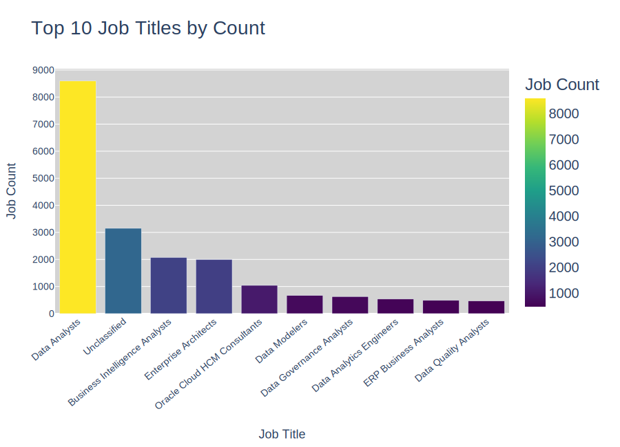
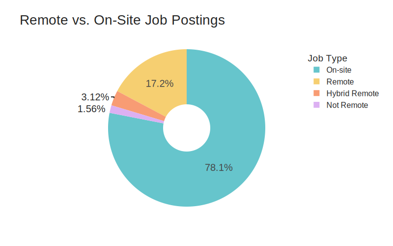
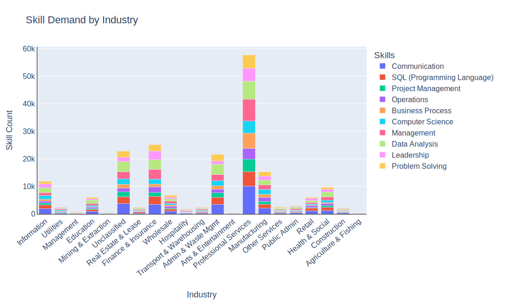

import pandas as pd
import plotly.express as px
import plotly.io as pio
pio.renderers.default = "vscode"
from pyspark.sql import SparkSession
from pyspark.sql.functions import col, to_date, count, explode, split, trim, regexp_replace
from pyspark.sql import functions as F
import plotly.graph_objects as goModule 04: Lab 01
Visual Reporting and Storytelling
visualization
plotly
spark
Visual Reporting
Storytelling with Data
Industry-Specific Visualization
Objectives
By the end of this lab, you will: 1. Load and analyze the Lightcast dataset in Spark DataFrame. 2. Create five easy and three medium-complexity visualizations using Plotly. 3. Explore salary distributions, employment trends, and job postings. 4. Analyze skills in relation to NAICS/SOC/ONET codes and salaries. 5. Customize colors, fonts, and styles in all visualizations (default themes result in a 2.5-point deduction). 6. Follow best practices for reporting on data communication.
Step 1: Load the Dataset
# Initialize Spark Session
spark = SparkSession.builder.appName("LightcastData").getOrCreate()
# Load Data
df = spark.read.option("header", "true").option("inferSchema", "true").option("multiLine","true").option("escape", "\"").csv("./data/lightcast_job_postings.csv")
# Show Schema and Sample Data
df.printSchema()
df.show(5)Setting default log level to "WARN".
To adjust logging level use sc.setLogLevel(newLevel). For SparkR, use setLogLevel(newLevel).
25/03/27 04:50:08 WARN NativeCodeLoader: Unable to load native-hadoop library for your platform... using builtin-java classes where applicable
25/03/27 04:50:25 WARN SparkStringUtils: Truncated the string representation of a plan since it was too large. This behavior can be adjusted by setting 'spark.sql.debug.maxToStringFields'.
root
|-- ID: string (nullable = true)
|-- LAST_UPDATED_DATE: date (nullable = true)
|-- LAST_UPDATED_TIMESTAMP: timestamp (nullable = true)
|-- DUPLICATES: integer (nullable = true)
|-- POSTED: date (nullable = true)
|-- EXPIRED: date (nullable = true)
|-- DURATION: integer (nullable = true)
|-- SOURCE_TYPES: string (nullable = true)
|-- SOURCES: string (nullable = true)
|-- URL: string (nullable = true)
|-- ACTIVE_URLS: string (nullable = true)
|-- ACTIVE_SOURCES_INFO: string (nullable = true)
|-- TITLE_RAW: string (nullable = true)
|-- BODY: string (nullable = true)
|-- MODELED_EXPIRED: date (nullable = true)
|-- MODELED_DURATION: integer (nullable = true)
|-- COMPANY: integer (nullable = true)
|-- COMPANY_NAME: string (nullable = true)
|-- COMPANY_RAW: string (nullable = true)
|-- COMPANY_IS_STAFFING: boolean (nullable = true)
|-- EDUCATION_LEVELS: string (nullable = true)
|-- EDUCATION_LEVELS_NAME: string (nullable = true)
|-- MIN_EDULEVELS: integer (nullable = true)
|-- MIN_EDULEVELS_NAME: string (nullable = true)
|-- MAX_EDULEVELS: integer (nullable = true)
|-- MAX_EDULEVELS_NAME: string (nullable = true)
|-- EMPLOYMENT_TYPE: integer (nullable = true)
|-- EMPLOYMENT_TYPE_NAME: string (nullable = true)
|-- MIN_YEARS_EXPERIENCE: integer (nullable = true)
|-- MAX_YEARS_EXPERIENCE: integer (nullable = true)
|-- IS_INTERNSHIP: boolean (nullable = true)
|-- SALARY: integer (nullable = true)
|-- REMOTE_TYPE: integer (nullable = true)
|-- REMOTE_TYPE_NAME: string (nullable = true)
|-- ORIGINAL_PAY_PERIOD: string (nullable = true)
|-- SALARY_TO: integer (nullable = true)
|-- SALARY_FROM: integer (nullable = true)
|-- LOCATION: string (nullable = true)
|-- CITY: string (nullable = true)
|-- CITY_NAME: string (nullable = true)
|-- COUNTY: integer (nullable = true)
|-- COUNTY_NAME: string (nullable = true)
|-- MSA: integer (nullable = true)
|-- MSA_NAME: string (nullable = true)
|-- STATE: integer (nullable = true)
|-- STATE_NAME: string (nullable = true)
|-- COUNTY_OUTGOING: integer (nullable = true)
|-- COUNTY_NAME_OUTGOING: string (nullable = true)
|-- COUNTY_INCOMING: integer (nullable = true)
|-- COUNTY_NAME_INCOMING: string (nullable = true)
|-- MSA_OUTGOING: integer (nullable = true)
|-- MSA_NAME_OUTGOING: string (nullable = true)
|-- MSA_INCOMING: integer (nullable = true)
|-- MSA_NAME_INCOMING: string (nullable = true)
|-- NAICS2: integer (nullable = true)
|-- NAICS2_NAME: string (nullable = true)
|-- NAICS3: integer (nullable = true)
|-- NAICS3_NAME: string (nullable = true)
|-- NAICS4: integer (nullable = true)
|-- NAICS4_NAME: string (nullable = true)
|-- NAICS5: integer (nullable = true)
|-- NAICS5_NAME: string (nullable = true)
|-- NAICS6: integer (nullable = true)
|-- NAICS6_NAME: string (nullable = true)
|-- TITLE: string (nullable = true)
|-- TITLE_NAME: string (nullable = true)
|-- TITLE_CLEAN: string (nullable = true)
|-- SKILLS: string (nullable = true)
|-- SKILLS_NAME: string (nullable = true)
|-- SPECIALIZED_SKILLS: string (nullable = true)
|-- SPECIALIZED_SKILLS_NAME: string (nullable = true)
|-- CERTIFICATIONS: string (nullable = true)
|-- CERTIFICATIONS_NAME: string (nullable = true)
|-- COMMON_SKILLS: string (nullable = true)
|-- COMMON_SKILLS_NAME: string (nullable = true)
|-- SOFTWARE_SKILLS: string (nullable = true)
|-- SOFTWARE_SKILLS_NAME: string (nullable = true)
|-- ONET: string (nullable = true)
|-- ONET_NAME: string (nullable = true)
|-- ONET_2019: string (nullable = true)
|-- ONET_2019_NAME: string (nullable = true)
|-- CIP6: string (nullable = true)
|-- CIP6_NAME: string (nullable = true)
|-- CIP4: string (nullable = true)
|-- CIP4_NAME: string (nullable = true)
|-- CIP2: string (nullable = true)
|-- CIP2_NAME: string (nullable = true)
|-- SOC_2021_2: string (nullable = true)
|-- SOC_2021_2_NAME: string (nullable = true)
|-- SOC_2021_3: string (nullable = true)
|-- SOC_2021_3_NAME: string (nullable = true)
|-- SOC_2021_4: string (nullable = true)
|-- SOC_2021_4_NAME: string (nullable = true)
|-- SOC_2021_5: string (nullable = true)
|-- SOC_2021_5_NAME: string (nullable = true)
|-- LOT_CAREER_AREA: integer (nullable = true)
|-- LOT_CAREER_AREA_NAME: string (nullable = true)
|-- LOT_OCCUPATION: integer (nullable = true)
|-- LOT_OCCUPATION_NAME: string (nullable = true)
|-- LOT_SPECIALIZED_OCCUPATION: integer (nullable = true)
|-- LOT_SPECIALIZED_OCCUPATION_NAME: string (nullable = true)
|-- LOT_OCCUPATION_GROUP: integer (nullable = true)
|-- LOT_OCCUPATION_GROUP_NAME: string (nullable = true)
|-- LOT_V6_SPECIALIZED_OCCUPATION: integer (nullable = true)
|-- LOT_V6_SPECIALIZED_OCCUPATION_NAME: string (nullable = true)
|-- LOT_V6_OCCUPATION: integer (nullable = true)
|-- LOT_V6_OCCUPATION_NAME: string (nullable = true)
|-- LOT_V6_OCCUPATION_GROUP: integer (nullable = true)
|-- LOT_V6_OCCUPATION_GROUP_NAME: string (nullable = true)
|-- LOT_V6_CAREER_AREA: integer (nullable = true)
|-- LOT_V6_CAREER_AREA_NAME: string (nullable = true)
|-- SOC_2: string (nullable = true)
|-- SOC_2_NAME: string (nullable = true)
|-- SOC_3: string (nullable = true)
|-- SOC_3_NAME: string (nullable = true)
|-- SOC_4: string (nullable = true)
|-- SOC_4_NAME: string (nullable = true)
|-- SOC_5: string (nullable = true)
|-- SOC_5_NAME: string (nullable = true)
|-- LIGHTCAST_SECTORS: string (nullable = true)
|-- LIGHTCAST_SECTORS_NAME: string (nullable = true)
|-- NAICS_2022_2: integer (nullable = true)
|-- NAICS_2022_2_NAME: string (nullable = true)
|-- NAICS_2022_3: integer (nullable = true)
|-- NAICS_2022_3_NAME: string (nullable = true)
|-- NAICS_2022_4: integer (nullable = true)
|-- NAICS_2022_4_NAME: string (nullable = true)
|-- NAICS_2022_5: integer (nullable = true)
|-- NAICS_2022_5_NAME: string (nullable = true)
|-- NAICS_2022_6: integer (nullable = true)
|-- NAICS_2022_6_NAME: string (nullable = true)
+--------------------+-----------------+----------------------+----------+----------+----------+--------+--------------------+--------------------+--------------------+-----------+-------------------+--------------------+--------------------+---------------+----------------+--------+--------------------+-----------+-------------------+----------------+---------------------+-------------+-------------------+-------------+------------------+---------------+--------------------+--------------------+--------------------+-------------+------+-----------+----------------+-------------------+---------+-----------+--------------------+--------------------+-------------+------+--------------+-----+--------------------+-----+----------+---------------+--------------------+---------------+--------------------+------------+--------------------+------------+--------------------+------+--------------------+------+--------------------+------+--------------------+------+--------------------+------+--------------------+------------------+-------------------+--------------------+--------------------+--------------------+--------------------+-----------------------+--------------------+--------------------+--------------------+--------------------+--------------------+--------------------+----------+--------------------+----------+--------------------+--------------------+--------------------+--------------------+--------------------+--------------------+--------------------+----------+--------------------+----------+--------------------+----------+---------------+----------+---------------+---------------+--------------------+--------------+--------------------+--------------------------+-------------------------------+--------------------+-------------------------+-----------------------------+----------------------------------+-----------------+----------------------+-----------------------+----------------------------+------------------+-----------------------+-------+--------------------+-------+--------------------+-------+---------------+-------+---------------+-----------------+----------------------+------------+--------------------+------------+--------------------+------------+--------------------+------------+--------------------+------------+--------------------+
| ID|LAST_UPDATED_DATE|LAST_UPDATED_TIMESTAMP|DUPLICATES| POSTED| EXPIRED|DURATION| SOURCE_TYPES| SOURCES| URL|ACTIVE_URLS|ACTIVE_SOURCES_INFO| TITLE_RAW| BODY|MODELED_EXPIRED|MODELED_DURATION| COMPANY| COMPANY_NAME|COMPANY_RAW|COMPANY_IS_STAFFING|EDUCATION_LEVELS|EDUCATION_LEVELS_NAME|MIN_EDULEVELS| MIN_EDULEVELS_NAME|MAX_EDULEVELS|MAX_EDULEVELS_NAME|EMPLOYMENT_TYPE|EMPLOYMENT_TYPE_NAME|MIN_YEARS_EXPERIENCE|MAX_YEARS_EXPERIENCE|IS_INTERNSHIP|SALARY|REMOTE_TYPE|REMOTE_TYPE_NAME|ORIGINAL_PAY_PERIOD|SALARY_TO|SALARY_FROM| LOCATION| CITY| CITY_NAME|COUNTY| COUNTY_NAME| MSA| MSA_NAME|STATE|STATE_NAME|COUNTY_OUTGOING|COUNTY_NAME_OUTGOING|COUNTY_INCOMING|COUNTY_NAME_INCOMING|MSA_OUTGOING| MSA_NAME_OUTGOING|MSA_INCOMING| MSA_NAME_INCOMING|NAICS2| NAICS2_NAME|NAICS3| NAICS3_NAME|NAICS4| NAICS4_NAME|NAICS5| NAICS5_NAME|NAICS6| NAICS6_NAME| TITLE| TITLE_NAME| TITLE_CLEAN| SKILLS| SKILLS_NAME| SPECIALIZED_SKILLS|SPECIALIZED_SKILLS_NAME| CERTIFICATIONS| CERTIFICATIONS_NAME| COMMON_SKILLS| COMMON_SKILLS_NAME| SOFTWARE_SKILLS|SOFTWARE_SKILLS_NAME| ONET| ONET_NAME| ONET_2019| ONET_2019_NAME| CIP6| CIP6_NAME| CIP4| CIP4_NAME| CIP2| CIP2_NAME|SOC_2021_2| SOC_2021_2_NAME|SOC_2021_3| SOC_2021_3_NAME|SOC_2021_4|SOC_2021_4_NAME|SOC_2021_5|SOC_2021_5_NAME|LOT_CAREER_AREA|LOT_CAREER_AREA_NAME|LOT_OCCUPATION| LOT_OCCUPATION_NAME|LOT_SPECIALIZED_OCCUPATION|LOT_SPECIALIZED_OCCUPATION_NAME|LOT_OCCUPATION_GROUP|LOT_OCCUPATION_GROUP_NAME|LOT_V6_SPECIALIZED_OCCUPATION|LOT_V6_SPECIALIZED_OCCUPATION_NAME|LOT_V6_OCCUPATION|LOT_V6_OCCUPATION_NAME|LOT_V6_OCCUPATION_GROUP|LOT_V6_OCCUPATION_GROUP_NAME|LOT_V6_CAREER_AREA|LOT_V6_CAREER_AREA_NAME| SOC_2| SOC_2_NAME| SOC_3| SOC_3_NAME| SOC_4| SOC_4_NAME| SOC_5| SOC_5_NAME|LIGHTCAST_SECTORS|LIGHTCAST_SECTORS_NAME|NAICS_2022_2| NAICS_2022_2_NAME|NAICS_2022_3| NAICS_2022_3_NAME|NAICS_2022_4| NAICS_2022_4_NAME|NAICS_2022_5| NAICS_2022_5_NAME|NAICS_2022_6| NAICS_2022_6_NAME|
+--------------------+-----------------+----------------------+----------+----------+----------+--------+--------------------+--------------------+--------------------+-----------+-------------------+--------------------+--------------------+---------------+----------------+--------+--------------------+-----------+-------------------+----------------+---------------------+-------------+-------------------+-------------+------------------+---------------+--------------------+--------------------+--------------------+-------------+------+-----------+----------------+-------------------+---------+-----------+--------------------+--------------------+-------------+------+--------------+-----+--------------------+-----+----------+---------------+--------------------+---------------+--------------------+------------+--------------------+------------+--------------------+------+--------------------+------+--------------------+------+--------------------+------+--------------------+------+--------------------+------------------+-------------------+--------------------+--------------------+--------------------+--------------------+-----------------------+--------------------+--------------------+--------------------+--------------------+--------------------+--------------------+----------+--------------------+----------+--------------------+--------------------+--------------------+--------------------+--------------------+--------------------+--------------------+----------+--------------------+----------+--------------------+----------+---------------+----------+---------------+---------------+--------------------+--------------+--------------------+--------------------------+-------------------------------+--------------------+-------------------------+-----------------------------+----------------------------------+-----------------+----------------------+-----------------------+----------------------------+------------------+-----------------------+-------+--------------------+-------+--------------------+-------+---------------+-------+---------------+-----------------+----------------------+------------+--------------------+------------+--------------------+------------+--------------------+------------+--------------------+------------+--------------------+
|1f57d95acf4dc67ed...| 2024-09-06| 2024-09-06 20:32:...| 0|2024-06-02|2024-06-08| 6| [\n "Company"\n]|[\n "brassring.c...|[\n "https://sjo...| []| NULL|Enterprise Analys...|31-May-2024\n\nEn...| 2024-06-08| 6| 894731| Murphy USA| Murphy USA| false| [\n 2\n]| [\n "Bachelor's ...| 2| Bachelor's degree| NULL| NULL| 1|Full-time (> 32 h...| 2| 2| false| NULL| 0| [None]| NULL| NULL| NULL|{\n "lat": 33.20...|RWwgRG9yYWRvLCBBUg==|El Dorado, AR| 5139| Union, AR|20980| El Dorado, AR| 5| Arkansas| 5139| Union, AR| 5139| Union, AR| 20980| El Dorado, AR| 20980| El Dorado, AR| 44| Retail Trade| 441|Motor Vehicle and...| 4413|Automotive Parts,...| 44133|Automotive Parts ...|441330|Automotive Parts ...|ET29C073C03D1F86B4|Enterprise Analysts|enterprise analys...|[\n "KS126DB6T06...|[\n "Merchandisi...|[\n "KS126DB6T06...| [\n "Merchandisi...| []| []|[\n "KS126706DPF...|[\n "Mathematics...|[\n "KS440W865GC...|[\n "SQL (Progra...|15-2051.01|Business Intellig...|15-2051.01|Business Intellig...|[\n "45.0601",\n...|[\n "Economics, ...|[\n "45.06",\n ...|[\n "Economics",...|[\n "45",\n "27...|[\n "Social Scie...| 15-0000|Computer and Math...| 15-2000|Mathematical Scie...| 15-2050|Data Scientists| 15-2051|Data Scientists| 23|Information Techn...| 231010|Business Intellig...| 23101011| General ERP Analy...| 2310| Business Intellig...| 23101011| General ERP Analy...| 231010| Business Intellig...| 2310| Business Intellig...| 23| Information Techn...|15-0000|Computer and Math...|15-2000|Mathematical Scie...|15-2050|Data Scientists|15-2051|Data Scientists| [\n 7\n]| [\n "Artificial ...| 44| Retail Trade| 441|Motor Vehicle and...| 4413|Automotive Parts,...| 44133|Automotive Parts ...| 441330|Automotive Parts ...|
|0cb072af26757b6c4...| 2024-08-02| 2024-08-02 17:08:...| 0|2024-06-02|2024-08-01| NULL| [\n "Job Board"\n]| [\n "maine.gov"\n]|[\n "https://job...| []| NULL|Oracle Consultant...|Oracle Consultant...| 2024-08-01| NULL| 133098|Smx Corporation L...| SMX| true| [\n 99\n]| [\n "No Educatio...| 99|No Education Listed| NULL| NULL| 1|Full-time (> 32 h...| 3| 3| false| NULL| 1| Remote| NULL| NULL| NULL|{\n "lat": 44.31...| QXVndXN0YSwgTUU=| Augusta, ME| 23011| Kennebec, ME|12300|Augusta-Watervill...| 23| Maine| 23011| Kennebec, ME| 23011| Kennebec, ME| 12300|Augusta-Watervill...| 12300|Augusta-Watervill...| 56|Administrative an...| 561|Administrative an...| 5613| Employment Services| 56132|Temporary Help Se...|561320|Temporary Help Se...|ET21DDA63780A7DC09| Oracle Consultants|oracle consultant...|[\n "KS122626T55...|[\n "Procurement...|[\n "KS122626T55...| [\n "Procurement...| []| []| []| []|[\n "BGSBF3F508F...|[\n "Oracle Busi...|15-2051.01|Business Intellig...|15-2051.01|Business Intellig...| []| []| []| []| []| []| 15-0000|Computer and Math...| 15-2000|Mathematical Scie...| 15-2050|Data Scientists| 15-2051|Data Scientists| 23|Information Techn...| 231010|Business Intellig...| 23101012| Oracle Consultant...| 2310| Business Intellig...| 23101012| Oracle Consultant...| 231010| Business Intellig...| 2310| Business Intellig...| 23| Information Techn...|15-0000|Computer and Math...|15-2000|Mathematical Scie...|15-2050|Data Scientists|15-2051|Data Scientists| NULL| NULL| 56|Administrative an...| 561|Administrative an...| 5613| Employment Services| 56132|Temporary Help Se...| 561320|Temporary Help Se...|
|85318b12b3331fa49...| 2024-09-06| 2024-09-06 20:32:...| 1|2024-06-02|2024-07-07| 35| [\n "Job Board"\n]|[\n "dejobs.org"\n]|[\n "https://dej...| []| NULL| Data Analyst|Taking care of pe...| 2024-06-10| 8|39063746| Sedgwick| Sedgwick| false| [\n 2\n]| [\n "Bachelor's ...| 2| Bachelor's degree| NULL| NULL| 1|Full-time (> 32 h...| 5| NULL| false| NULL| 0| [None]| NULL| NULL| NULL|{\n "lat": 32.77...| RGFsbGFzLCBUWA==| Dallas, TX| 48113| Dallas, TX|19100|Dallas-Fort Worth...| 48| Texas| 48113| Dallas, TX| 48113| Dallas, TX| 19100|Dallas-Fort Worth...| 19100|Dallas-Fort Worth...| 52|Finance and Insur...| 524|Insurance Carrier...| 5242|Agencies, Brokera...| 52429|Other Insurance R...|524291| Claims Adjusting|ET3037E0C947A02404| Data Analysts| data analyst|[\n "KS1218W78FG...|[\n "Management"...|[\n "ESF3939CE1F...| [\n "Exception R...|[\n "KS683TN76T7...|[\n "Security Cl...|[\n "KS1218W78FG...|[\n "Management"...|[\n "KS126HY6YLT...|[\n "Microsoft O...|15-2051.01|Business Intellig...|15-2051.01|Business Intellig...| []| []| []| []| []| []| 15-0000|Computer and Math...| 15-2000|Mathematical Scie...| 15-2050|Data Scientists| 15-2051|Data Scientists| 23|Information Techn...| 231113|Data / Data Minin...| 23111310| Data Analyst| 2311| Data Analysis and...| 23111310| Data Analyst| 231113| Data / Data Minin...| 2311| Data Analysis and...| 23| Information Techn...|15-0000|Computer and Math...|15-2000|Mathematical Scie...|15-2050|Data Scientists|15-2051|Data Scientists| NULL| NULL| 52|Finance and Insur...| 524|Insurance Carrier...| 5242|Agencies, Brokera...| 52429|Other Insurance R...| 524291| Claims Adjusting|
|1b5c3941e54a1889e...| 2024-09-06| 2024-09-06 20:32:...| 1|2024-06-02|2024-07-20| 48| [\n "Job Board"\n]|[\n "disabledper...|[\n "https://www...| []| NULL|Sr. Lead Data Mgm...|About this role:\...| 2024-06-12| 10|37615159| Wells Fargo|Wells Fargo| false| [\n 99\n]| [\n "No Educatio...| 99|No Education Listed| NULL| NULL| 1|Full-time (> 32 h...| 3| NULL| false| NULL| 0| [None]| NULL| NULL| NULL|{\n "lat": 33.44...| UGhvZW5peCwgQVo=| Phoenix, AZ| 4013| Maricopa, AZ|38060|Phoenix-Mesa-Chan...| 4| Arizona| 4013| Maricopa, AZ| 4013| Maricopa, AZ| 38060|Phoenix-Mesa-Chan...| 38060|Phoenix-Mesa-Chan...| 52|Finance and Insur...| 522|Credit Intermedia...| 5221|Depository Credit...| 52211| Commercial Banking|522110| Commercial Banking|ET2114E0404BA30075|Management Analysts|sr lead data mgmt...|[\n "KS123QX62QY...|[\n "Exit Strate...|[\n "KS123QX62QY...| [\n "Exit Strate...| []| []|[\n "KS7G6NP6R6L...|[\n "Reliability...|[\n "KS4409D76NW...|[\n "SAS (Softwa...|15-2051.01|Business Intellig...|15-2051.01|Business Intellig...| []| []| []| []| []| []| 15-0000|Computer and Math...| 15-2000|Mathematical Scie...| 15-2050|Data Scientists| 15-2051|Data Scientists| 23|Information Techn...| 231113|Data / Data Minin...| 23111310| Data Analyst| 2311| Data Analysis and...| 23111310| Data Analyst| 231113| Data / Data Minin...| 2311| Data Analysis and...| 23| Information Techn...|15-0000|Computer and Math...|15-2000|Mathematical Scie...|15-2050|Data Scientists|15-2051|Data Scientists| [\n 6\n]| [\n "Data Privac...| 52|Finance and Insur...| 522|Credit Intermedia...| 5221|Depository Credit...| 52211| Commercial Banking| 522110| Commercial Banking|
|cb5ca25f02bdf25c1...| 2024-06-19| 2024-06-19 07:00:00| 0|2024-06-02|2024-06-17| 15|[\n "FreeJobBoar...|[\n "craigslist....|[\n "https://mod...| []| NULL|Comisiones de $10...|Comisiones de $10...| 2024-06-17| 15| 0| Unclassified| LH/GM| false| [\n 99\n]| [\n "No Educatio...| 99|No Education Listed| NULL| NULL| 3|Part-time / full-...| NULL| NULL| false| 92500| 0| [None]| year| 150000| 35000|{\n "lat": 37.63...| TW9kZXN0bywgQ0E=| Modesto, CA| 6099|Stanislaus, CA|33700| Modesto, CA| 6|California| 6099| Stanislaus, CA| 6099| Stanislaus, CA| 33700| Modesto, CA| 33700| Modesto, CA| 99|Unclassified Indu...| 999|Unclassified Indu...| 9999|Unclassified Indu...| 99999|Unclassified Indu...|999999|Unclassified Indu...|ET0000000000000000| Unclassified|comisiones de por...| []| []| []| []| []| []| []| []| []| []|15-2051.01|Business Intellig...|15-2051.01|Business Intellig...| []| []| []| []| []| []| 15-0000|Computer and Math...| 15-2000|Mathematical Scie...| 15-2050|Data Scientists| 15-2051|Data Scientists| 23|Information Techn...| 231010|Business Intellig...| 23101012| Oracle Consultant...| 2310| Business Intellig...| 23101012| Oracle Consultant...| 231010| Business Intellig...| 2310| Business Intellig...| 23| Information Techn...|15-0000|Computer and Math...|15-2000|Mathematical Scie...|15-2050|Data Scientists|15-2051|Data Scientists| NULL| NULL| 99|Unclassified Indu...| 999|Unclassified Indu...| 9999|Unclassified Indu...| 99999|Unclassified Indu...| 999999|Unclassified Indu...|
+--------------------+-----------------+----------------------+----------+----------+----------+--------+--------------------+--------------------+--------------------+-----------+-------------------+--------------------+--------------------+---------------+----------------+--------+--------------------+-----------+-------------------+----------------+---------------------+-------------+-------------------+-------------+------------------+---------------+--------------------+--------------------+--------------------+-------------+------+-----------+----------------+-------------------+---------+-----------+--------------------+--------------------+-------------+------+--------------+-----+--------------------+-----+----------+---------------+--------------------+---------------+--------------------+------------+--------------------+------------+--------------------+------+--------------------+------+--------------------+------+--------------------+------+--------------------+------+--------------------+------------------+-------------------+--------------------+--------------------+--------------------+--------------------+-----------------------+--------------------+--------------------+--------------------+--------------------+--------------------+--------------------+----------+--------------------+----------+--------------------+--------------------+--------------------+--------------------+--------------------+--------------------+--------------------+----------+--------------------+----------+--------------------+----------+---------------+----------+---------------+---------------+--------------------+--------------+--------------------+--------------------------+-------------------------------+--------------------+-------------------------+-----------------------------+----------------------------------+-----------------+----------------------+-----------------------+----------------------------+------------------+-----------------------+-------+--------------------+-------+--------------------+-------+---------------+-------+---------------+-----------------+----------------------+------------+--------------------+------------+--------------------+------------+--------------------+------------+--------------------+------------+--------------------+
only showing top 5 rows
1 Salary Distribution by Employment Type
- Identify salary trends across different employment types.
- Filter the dataset
- Remove records where salary is missing or zero.
- Aggregate Data
- Group by employment type and compute salary distribution.
- Visualize results
- Create a box plot where:
- X-axis =
EMPLOYMENT_TYPE_NAME - Y-axis =
SALARY
- X-axis =
- Customize colors, fonts, and styles to avoid a 2.5-point deduction.
- Create a box plot where:
- Explanation: Write two sentences about what the graph reveals.
filtered_df = df.filter((col('SALARY').isNotNull()) & (col('SALARY') > 0))salary_by_employment_type = filtered_df.groupBy('EMPLOYMENT_TYPE_NAME').agg(
F.min('SALARY').alias('min_salary'),
F.max('SALARY').alias('max_salary'),
F.avg('SALARY').alias('avg_salary'),
F.expr('percentile_approx(SALARY, 0.5)').alias('median_salary')
)
salary_by_employment_type.show(truncate = False)[Stage 3:> (0 + 1) / 1] +----------------------+----------+----------+------------------+-------------+
|EMPLOYMENT_TYPE_NAME |min_salary|max_salary|avg_salary |median_salary|
+----------------------+----------+----------+------------------+-------------+
|Part-time / full-time |20800 |455375 |105679.78904991949|100000 |
|Part-time (≤ 32 hours)|15860 |310050 |98802.50963391137 |86390 |
|Full-time (> 32 hours)|20583 |500000 |118898.34634246716|116500 |
+----------------------+----------+----------+------------------+-------------+
df_pandas = filtered_df.select('EMPLOYMENT_TYPE_NAME', 'SALARY').toPandas()
fig = px.box(df_pandas,
x = 'EMPLOYMENT_TYPE_NAME',
y = 'SALARY',
title = 'Salary Distribution by Employment Type',
labels = {'EMPLOYMENT_TYPE_NAME':
'Employment Type', 'SALARY': 'Salary'},
color = 'EMPLOYMENT_TYPE_NAME',
template= "simple_white",
color_discrete_sequence = px.colors.qualitative.Set2)
fig.update_layout(
font = dict(family = 'Arial', size = 16),
xaxis = dict(
tickmode = 'array',
tickvals = [0, 1, 2],
ticktext = ['Mixed', 'Full-Time (> 32 hr)', 'Part-Time (≤ 32 hr)']),
yaxis_title = 'Salary',
plot_bgcolor = 'white',
paper_bgcolor = 'lightgray')
fig.show()
fig.write_image("output/figure1.svg", width = 1000, height = 500, scale = 1) Salary Distribution by Employment Type
{kind=link}
The box plot shows salary distributions across different employment types. It highlights that Full-Time jobs have the highest median salary and a wider interquartile range (IQR), indicating higher salaries and greater variability in earnings. The presence of outliers suggests that some positions in this category offer exceptionally high salaries.
In addition, Part-Time salaries are generally lower, with a lower median and a tighter IQR, indicating less variability. Finally, Mixed employment type falls between the two, showing moderate salary dispersion. This analysis suggests that full-time jobs generally offer higher pay than part-time roles, but salaries within each category still vary significantly.
2 Salary Distribution by Industry
- Compare salary variations across industries.
- Filter the dataset
- Keep records where salary is greater than zero.
- Aggregate Data
- Group by NAICS industry codes.
- Visualize results
- Create a box plot where:
- X-axis =
NAICS2_NAME - Y-axis =
SALARY
- X-axis =
- Customize colors, fonts, and styles.
- Create a box plot where:
- Explanation: Write two sentences about what the graph reveals.
salary_by_NAICS = filtered_df.groupBy('NAICS2_NAME').agg(
F.min('SALARY').alias('min_salary'),
F.max('SALARY').alias('max_salary'),
F.avg('SALARY').alias('avg_salary'),
F.expr('percentile_approx(SALARY, 0.5)').alias('median_salary')
)
salary_by_NAICS.show(30, truncate = False)[Stage 9:> (0 + 1) / 1] +------------------------------------------------------------------------+----------+----------+------------------+-------------+
|NAICS2_NAME |min_salary|max_salary|avg_salary |median_salary|
+------------------------------------------------------------------------+----------+----------+------------------+-------------+
|Administrative and Support and Waste Management and Remediation Services|27040 |500000 |102942.47729618163|99840 |
|Public Administration |31150 |253150 |83252.96718972895 |79250 |
|Real Estate and Rental and Leasing |28080 |260000 |91487.53775743707 |81464 |
|Information |27040 |500000 |140151.23053501523|133000 |
|Unclassified Industry |15860 |372500 |108793.61641493303|105000 |
|Accommodation and Food Services |20800 |338750 |145674.50191570882|149850 |
|Finance and Insurance |31200 |311000 |119854.02180851063|117937 |
|Construction |31387 |194500 |115134.3485915493 |117500 |
|Utilities |39020 |234000 |118188.44025157233|114950 |
|Management of Companies and Enterprises |49920 |295000 |107347.15 |101400 |
|Professional, Scientific, and Technical Services |23585 |312500 |132599.58766559057|130000 |
|Arts, Entertainment, and Recreation |33176 |180000 |91034.79069767441 |76837 |
|Other Services (except Public Administration) |27040 |250000 |91423.89944134078 |85000 |
|Transportation and Warehousing |27300 |195000 |100463.8986784141 |100000 |
|Wholesale Trade |31200 |350000 |110030.41216216216|100000 |
|Agriculture, Forestry, Fishing and Hunting |52800 |222000 |98591.85714285714 |84000 |
|Manufacturing |26520 |319100 |122423.95072115384|121300 |
|Mining, Quarrying, and Oil and Gas Extraction |49920 |185750 |103722.86111111111|100500 |
|Educational Services |22440 |262250 |80582.0973084886 |75926 |
|Health Care and Social Assistance |20583 |455375 |101279.11927981995|98000 |
|Retail Trade |21237 |437500 |124757.09685863875|119850 |
+------------------------------------------------------------------------+----------+----------+------------------+-------------+
df_pandas_NAICS = filtered_df.select('NAICS2_NAME', 'SALARY').toPandas()
industry_mapping = {
"Retail Trade": "Retail",
"Administrative and Support and Waste Management and Remediation Services": "Admin & Waste Mgmt",
"Finance and Insurance": "Finance & Insurance",
"Unclassified Industry": "Unclassified",
"Information": "Information",
"Manufacturing": "Manufacturing",
"Professional, Scientific, and Technical Services": "Professional Services",
"Wholesale Trade": "Wholesale",
"Educational Services": "Education",
"Health Care and Social Assistance": "Health & Social",
"Public Administration": "Public Admin",
"Construction": "Construction",
"Transportation and Warehousing": "Transport & Warehousing",
"Real Estate and Rental and Leasing": "Real Estate & Lease",
"Accommodation and Food Services": "Hospitality",
"Other Services (except Public Administration)": "Other Services",
"Management of Companies and Enterprises": "Management",
"Mining, Quarrying, and Oil and Gas Extraction": "Mining & Extraction",
"Agriculture, Forestry, Fishing and Hunting": "Agriculture & Fishing",
"Utilities": "Utilities",
"Arts, Entertainment, and Recreation": "Arts & Entertainment"
}
df_pandas_NAICS['NAICS2_NAME'] = df_pandas_NAICS['NAICS2_NAME'].map(industry_mapping)
fig = px.box(df_pandas_NAICS,
x = 'NAICS2_NAME',
y = 'SALARY',
color = 'NAICS2_NAME',
title = 'Salary Distribution by Industry',
labels = {'NAICS2_NAME': 'Industry',
'SALARY': 'Salary'},
template= "simple_white",
width = 1000,
height = 600)
fig.update_layout(
font = dict(family = 'Arial', size = 20),
xaxis = dict(
title = dict(text = 'Industry',
font = dict(size = 18, family = 'Arial')),
tickangle = - 45,
tickfont = dict(size = 14, family = 'Arial'),
showline = True,
linewidth = 1),
yaxis=dict(
title = dict(text = 'Salary',
font = dict(size = 18, family = 'Arial')),
tickfont = dict(size = 14, family = 'Arial'),
showline = True,
linewidth = 1),
showlegend = False,
plot_bgcolor = 'white',
paper_bgcolor = 'lightgray')
fig.show()
fig.write_image("output/figure2.svg", width = 1000, height = 600, scale = 1) Salary Distribution by Industry
{kind=link}
The box plot indicates that industries such as Accommodation and Food Services and Information tend to have higher median salaries and wider salary distributions, suggesting greater earning potential and variability. In contrast, industries like Public Administration, Educational Services, and Arts & Entertainment show lower median salaries with a more compressed range, implying more consistency in lower wages.
Moreover, certain industries, such as Health Care and Social Assistance and Admin & Waste Mgmt, show a high number of outliers, suggesting the presence of highly paid roles. However, other industies like Mining, Quarrying, and Oil and Gas Extraction have more compact distributions, indicating more standardized salary ranges. The Unclassified category has a broad salary spread, likely due to its diverse job postings.
3 Job Posting Trends Over Time
- Analyze how job postings fluctuate over time.
- Aggregate Data
- Count job postings per posted date (
POSTED).
- Count job postings per posted date (
- Visualize results
- Create a line chart where:
- X-axis =
POSTED - Y-axis =
Number of Job Postings
- X-axis =
- Apply custom colors and font styles.
- Create a line chart where:
- Explanation: Write two sentences about what the graph reveals.
df_to_date = df.withColumn('POSTED', to_date(col('POSTED')))
job_trends = df_to_date.groupBy('POSTED').agg(count('*').alias('num_postings'))
job_trends.show(5)[Stage 13:> (0 + 1) / 1] +----------+------------+
| POSTED|num_postings|
+----------+------------+
|2024-09-18| 700|
|2024-05-30| 517|
|2024-06-12| 708|
|2024-08-27| 629|
|2024-06-04| 453|
+----------+------------+
only showing top 5 rows
job_trends_pd = job_trends.toPandas().sort_values('POSTED')
fig = px.line(job_trends_pd,
x = 'POSTED',
y = 'num_postings',
title = 'Job Posting Trends Over Time',
labels = {'POSTED': 'Date',
'num_postings': 'Number of Job Postings'},
line_shape = 'linear',
color_discrete_sequence = ["#1d6ef3"],
markers = True,
width = 1000,
height = 500)
fig.update_layout(
font = dict(family = 'Arial', size = 20),
xaxis = dict(
title = dict(text = 'Month',
font = dict(size = 18, family = 'Arial')),
tickformat = '%b %Y',
tickfont = dict(size = 14, family = 'Arial'),
dtick = 'M1',
tickangle = -30,
showline = True,
linewidth = 1,
linecolor = 'black'),
yaxis=dict(
title = dict(text = 'Number of Job Postings',
font = dict(size = 18, family = 'Arial')),
tickfont = dict(size = 14, family = 'Arial'),
showline = True,
linewidth = 1,
linecolor = 'black',
gridcolor = 'lightgray'),
plot_bgcolor = 'white',
paper_bgcolor = 'lightgray'
)
fig.show()
fig.write_image("output/figure3.svg", width = 1000, height = 500, scale = 1){kind=link}
This graph shows that the number of job postings varies significantly over time, with frequent peaks and valleys. This suggests seasonal or cyclical hiring trends, possibly influenced by industry demands or economic factors. In addition, a noticeable peak in June 2024 indicates a surge in job postings, which could be due to companies ramping up hiring before the summer.
4 Top 10 Job Titles by Count
- Identify the most frequently posted job titles.
- Aggregate Data
- Count the occurrences of each job title (
TITLE_NAME). - Select the top 10 most frequent titles.
- Count the occurrences of each job title (
- Visualize results
- Create a bar chart where:
- X-axis =
TITLE_NAME - Y-axis =
Job Count
- X-axis =
- Apply custom colors and font styles.
- Create a bar chart where:
- Explanation: Write two sentences about what the graph reveals.
df.createOrReplaceTempView("jobs")
top_job_titles = spark.sql("""
SELECT TITLE_NAME, COUNT(*) AS job_count
FROM jobs
GROUP BY TITLE_NAME
ORDER BY job_count DESC
LIMIT 10
""")
top_job_titles.show(truncate = False)[Stage 19:> (0 + 1) / 1] +------------------------------+---------+
|TITLE_NAME |job_count|
+------------------------------+---------+
|Data Analysts |8593 |
|Unclassified |3151 |
|Business Intelligence Analysts|2074 |
|Enterprise Architects |1999 |
|Oracle Cloud HCM Consultants |1042 |
|Data Modelers |668 |
|Data Governance Analysts |629 |
|Data Analytics Engineers |537 |
|ERP Business Analysts |488 |
|Data Quality Analysts |467 |
+------------------------------+---------+
top_job_titles_pd = top_job_titles.toPandas()
fig = px.bar(top_job_titles_pd,
x = 'TITLE_NAME',
y = 'job_count',
title = 'Top 10 Job Titles by Count',
labels = {'TITLE_NAME': 'Job Title',
'job_count': 'Job Count'},
color = 'job_count',
color_continuous_scale = 'Viridis',
width = 900,
height = 650)
fig.update_layout(
font = dict(family = 'Arial', size = 20),
xaxis = dict(
title = dict(font = dict(size = 18, family = 'Arial')),
tickfont = dict(size = 14, family = 'Arial'),
tickangle = -40),
yaxis=dict(
title = dict(font = dict(size = 18, family = 'Arial')),
tickfont = dict(size = 14, family = 'Arial')),
plot_bgcolor = 'lightgrey',
paper_bgcolor = 'white')
fig.show()
fig.write_image("output/figure4.svg", width = 900, height = 650, scale = 1)
{kind=link}
The bar chart shows that Data Analysts are the most frequently posted job title, indicating a strong demand for data professionals. The presence of multiple data-related roles such as Business Intelligence Analysts, Data Modelers, and Data Governance Analysts suggests that companies are prioritizing data-driven decision-making.
Additionally, the Unclassified category, with 3,151 postings, may indicate job postings with missing or non-standardized titles. Specialized roles like Oracle Cloud HCM Consultants and Enterprise Architects also appear in the top 10, reflecting demand for expertise in enterprise systems and cloud solutions.
5 Remote vs On-Site Job Postings
- Compare the proportion of remote and on-site job postings.
- Aggregate Data
- Count job postings by remote type (
REMOTE_TYPE_NAME).
- Count job postings by remote type (
- Visualize results
- Create a pie chart where:
- Labels =
REMOTE_TYPE_NAME - Values =
Job Count
- Labels =
- Apply custom colors and font styles.
- Create a pie chart where:
- Explanation: Write two sentences about what the graph reveals.
remote_type = df.groupBy('REMOTE_TYPE_NAME').agg(count('*').alias('job_count'))
remote_type = remote_type.na.replace({'[None]': 'On-site'}, subset=['REMOTE_TYPE_NAME'])
remote_type_pd = remote_type.toPandas()
remote_type.show()[Stage 32:> (0 + 1) / 1] +----------------+---------+
|REMOTE_TYPE_NAME|job_count|
+----------------+---------+
| Remote| 12499|
| On-site| 56584|
| Not Remote| 1133|
| Hybrid Remote| 2260|
+----------------+---------+
fig = px.pie(remote_type_pd,
names = 'REMOTE_TYPE_NAME',
values = "job_count",
title = "Remote vs. On-Site Job Postings",
template= "simple_white",
color_discrete_sequence = px.colors.qualitative.Pastel,
hole = 0.3,
width = 800,
height = 500)
fig.update_layout(
font = dict(size = 20, family = 'Arial'),
legend_title_text = 'Job Type',
legend = dict(font = dict(size = 16)))
fig.show()
fig.write_image("output/figure5.svg", width = 800, height = 500, scale = 1)
Remote vs. On-Site Job Postings
{kind=link}
The pie chart shows that the most common job type is on-site work, with remote and hybrid jobs making up smaller portions. The majority of job postings shows that most companies are still requiring employees to work on-site. The slice for on-site jobs would dominate the pie chart, making up the largest portion. On the other hand, the “Not Remote” category likely refers to jobs that do not offer remote work options, but they may not strictly be on-site jobs (they could be in-person with specific constraints). This slice would be quite small, indicating that a limited number of job postings fall into this category.
6 Skill Demand Analysis by Industry (Stacked Bar Chart)
- Identify which skills are most in demand in various industries.
- Aggregate Data
- Extract skills from job postings.
- Count occurrences of skills grouped by NAICS industry codes.
- Visualize results
- Create a stacked bar chart where:
- X-axis =
Industry - Y-axis =
Skill Count - Color =
Skill
- X-axis =
- Apply custom colors and font styles.
- Create a stacked bar chart where:
- Explanation: Write two sentences about what the graph reveals.
skills_by_industry = df.withColumn(
'SKILLS_NAME',
regexp_replace(col('SKILLS_NAME'), r'[\[\]\n"]', ''))
skills_by_industry = skills_by_industry.withColumn('SKILLS_NAME', explode(split(col('SKILLS_NAME'), ",")))
skills_by_industry = skills_by_industry.withColumn('SKILLS_NAME', trim(col('SKILLS_NAME')))
skill_counts = skills_by_industry.groupBy('NAICS2_NAME', 'SKILLS_NAME').agg(count('*').alias('skill_count'))
skill_counts.show(10, truncate=False)[Stage 35:> (0 + 1) / 1] +------------------------------------------------------------------------+---------------------------------------+-----------+
|NAICS2_NAME |SKILLS_NAME |skill_count|
+------------------------------------------------------------------------+---------------------------------------+-----------+
|Unclassified Industry |JavaScript (Programming Language) |230 |
|Wholesale Trade |Test Data |8 |
|Educational Services |Master Of Business Administration (MBA)|25 |
|Professional, Scientific, and Technical Services |Workforce Management |107 |
|Information |Communication |1910 |
|Finance and Insurance |Data Lineage |180 |
|Retail Trade |Construction |6 |
|Administrative and Support and Waste Management and Remediation Services|Test Script |20 |
|Unclassified Industry |Amazon Web Services |604 |
|Administrative and Support and Waste Management and Remediation Services|Statistics |745 |
+------------------------------------------------------------------------+---------------------------------------+-----------+
only showing top 10 rows
skill_counts_pd = skill_counts.toPandas()
industry_mapping = {
"Retail Trade": "Retail",
"Administrative and Support and Waste Management and Remediation Services": "Admin & Waste Mgmt",
"Finance and Insurance": "Finance & Insurance",
"Unclassified Industry": "Unclassified",
"Information": "Information",
"Manufacturing": "Manufacturing",
"Professional, Scientific, and Technical Services": "Professional Services",
"Wholesale Trade": "Wholesale",
"Educational Services": "Education",
"Health Care and Social Assistance": "Health & Social",
"Public Administration": "Public Admin",
"Construction": "Construction",
"Transportation and Warehousing": "Transport & Warehousing",
"Real Estate and Rental and Leasing": "Real Estate & Lease",
"Accommodation and Food Services": "Hospitality",
"Other Services (except Public Administration)": "Other Services",
"Management of Companies and Enterprises": "Management",
"Mining, Quarrying, and Oil and Gas Extraction": "Mining & Extraction",
"Agriculture, Forestry, Fishing and Hunting": "Agriculture & Fishing",
"Utilities": "Utilities",
"Arts, Entertainment, and Recreation": "Arts & Entertainment"
}
skill_counts_pd['NAICS2_NAME'] = skill_counts_pd['NAICS2_NAME'].map(industry_mapping)
top_n_skills = 10
top_skills = skill_counts_pd.groupby('SKILLS_NAME')['skill_count'].sum().nlargest(top_n_skills).index
skill_counts_top10 = skill_counts_pd[skill_counts_pd['SKILLS_NAME'].isin(top_skills)] fig = px.bar(skill_counts_top10,
x = 'NAICS2_NAME',
y = 'skill_count',
color = 'SKILLS_NAME',
title = 'Skill Demand by Industry',
labels = {'NAICS2_NAME': 'Industry',
'skill_count': "Skill Count",
'SKILLS_NAME': 'Skill'},
width = 1100,
height = 650)
fig.update_layout(
font = dict(family = 'Arial', size = 16),
xaxis = dict(
title = dict(font = dict(size = 18, family = 'Arial')),
tickfont = dict(size = 16, family = 'Arial'),
tickangle = -40,
showline = True,
linecolor = 'black',
linewidth = 1),
yaxis = dict(
title = dict(font = dict(size = 18, family = 'Arial')),
tickfont = dict(size = 16, family = 'Arial'),
showline = True,
linecolor = 'black',
linewidth = 1),
legend_title = 'Skills',
paper_bgcolor = 'white')
fig.show()
fig.write_image("output/figure6.svg", width = 1100, height = 650, scale = 1)
{kind=link}
This barplot shows that skill demand varies significantly across industries. For example, the Professional, Scientific, and Technical Services sector shows the highest demand for the top 10 skills, indicating that this industry places a premium on a diverse and comprehensive skill set. However, industries like Arts, Entertainment, and Recreation show the least demand for these top skills, which may suggest a more specialized skill set or potentially a slower pace of digital transformation within these sectors.
Communication, Management, and Data Analysis consistently appear across nearly all industries, reinforcing their status as highly transferable and in-demand skills. These skills are likely essential across various roles and sectors, contributing to their widespread recognition.
7 Salary Analysis by ONET Occupation Type (Bubble Chart)
- Analyze how salaries differ across ONET occupation types.
- Aggregate Data
- Compute median salary for each occupation in the ONET taxonomy.
- Visualize results
- Create a bubble chart where:
- X-axis =
ONET_NAME - Y-axis =
Median Salary - Size = Number of job postings
- X-axis =
- Apply custom colors and font styles.
- Create a bubble chart where:
- Explanation: Write two sentences about what the graph reveals.
median_salary = spark.sql("""
SELECT
TITLE_NAME AS ONET_NAME,
percentile_approx(SALARY, 0.5) AS Median_Salary,
COUNT(*) AS Job_Postings
FROM jobs
GROUP BY TITLE_NAME
ORDER BY Job_Postings DESC
LIMIT 10
""")
median_salary.show()[Stage 41:> (0 + 1) / 1] +--------------------+-------------+------------+
| ONET_NAME|Median_Salary|Job_Postings|
+--------------------+-------------+------------+
| Data Analysts| 90000| 8593|
| Unclassified| 120640| 3151|
|Business Intellig...| 99911| 2074|
|Enterprise Archit...| 155090| 1999|
|Oracle Cloud HCM ...| 150500| 1042|
| Data Modelers| 135550| 668|
|Data Governance A...| 114400| 629|
|Data Analytics En...| 188867| 537|
|ERP Business Anal...| 113520| 488|
|Data Quality Anal...| 101875| 467|
+--------------------+-------------+------------+
median_salary_pd = median_salary.toPandas()
fig = px.scatter(median_salary_pd,
x = 'ONET_NAME',
y = 'Median_Salary',
size = 'Job_Postings',
color = 'Job_Postings',
hover_name = 'ONET_NAME',
title = 'Salary Analysis by ONET Occupation Type',
labels = {'ONET_NAME': 'Occupation Type',
'Median_Salary': 'Median Salary (USD)',
'Job_Postings': 'Number of Job Postings'},
width = 1100,
height = 650,
size_max = 70,
color_continuous_scale = 'Plasma')
fig.update_layout(
font = dict(family = 'Arial', size = 16),
xaxis = dict(
title = dict(font = dict(size = 18, family = 'Arial')),
tickfont = dict(size = 16, family = 'Arial'),
tickangle = -40,
showline = True,
linecolor = 'black',
linewidth = 1),
yaxis = dict(
title = dict(font = dict(size = 18, family = 'Arial')),
tickfont = dict(size = 16, family = 'Arial'),
showline = True,
linecolor = 'black',
linewidth = 1),
paper_bgcolor = 'white'
)
fig.show()
fig.write_image("output/figure7.svg", width = 1100, height = 650, scale = 1) Salary Analysis by ONET Occupation Type
{kind=link}
The bubble chart shows that Data Analysts account for the highest number of job postings, but their median salary is relatively lower than other ONET occupation categories. In contrast, Data Analytics Engineers have the highest median salaries, but job postings reflect that demand for these roles remains relatively low. The Unclassified category stands out with both a high volume of postings and a strong median salary, indicating that a substantial portion of job listings may not be directly associated with specific ONET occupations and require further understanding.
8 Career Pathway Trends (Sankey Diagram)
- Visualize job transitions between different occupation levels.
- Aggregate Data
- Identify career transitions between SOC job classifications.
- Visualize results
- Create a Sankey diagram where:
- Source =
SOC_2021_2_NAME - Target =
SOC_2021_3_NAME - Value = Number of transitions
- Source =
- Apply custom colors and font styles.
- Create a Sankey diagram where:
- Explanation: Write two sentences about what the graph reveals.
transition_df = df.groupBy('SOC_2021_2_NAME', 'SOC_2021_3_NAME').agg(F.count('*').alias('num_transitions'))
transition_df.show()[Stage 47:> (0 + 1) / 1] +--------------------+--------------------+---------------+
| SOC_2021_2_NAME| SOC_2021_3_NAME|num_transitions|
+--------------------+--------------------+---------------+
|Computer and Math...|Mathematical Scie...| 72476|
+--------------------+--------------------+---------------+
transition_pd = transition_df.toPandas()
all_labels = list(set(transition_pd['SOC_2021_2_NAME'].unique()) | set(transition_pd['SOC_2021_3_NAME'].unique()))
label_dict = {label: i for i, label in enumerate(all_labels)}
transition_pd['source_index'] = transition_pd['SOC_2021_2_NAME'].map(label_dict)
transition_pd['target_index'] = transition_pd['SOC_2021_3_NAME'].map(label_dict)
fig = go.Figure(go.Sankey(
node = dict(pad = 15,
thickness = 20,
line=dict(color = 'black', width = 0.5),
label = all_labels,
color = 'lightblue'),
link = dict(source=transition_pd['source_index'],
target=transition_pd['target_index'],
value=transition_pd['num_transitions'],
color= 'orange')))
fig.update_layout(
font = dict(family = 'Arial', size = 16),
title_text = 'Career Pathway Trends: Job Transitions',
title_font = dict(family = 'Arial', size = 20),
paper_bgcolor = 'white')
fig.show()
fig.write_image("output/figure8.svg", width = 1000, height = 600, scale = 1) Career Pathway Trends: Job Transitions
{kind=link}
The Sankey diagram highlights a notable career transition from Computer and Mathematical Occupations to Mathematical Science Occupations, suggesting a significant pathway between these fields. This reflects a strong overlap, indicating that individuals in computing roles may easily transition into mathematical science positions, showcasing mobility and flexibility across related disciplines.
However, the diagram shows only a single transition between these two occupation groups, implying that the current dataset captures a limited career pathway—possibly focusing on transitions within fields like data science or analytics. This may also suggest that other potential occupation transitions were either not recorded or unavailable in the dataset.